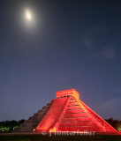

The cenote at Yaxunah
YAXUNAH • CENOTES
The Village Well That Became a Portal

Continued →

Your 2-3 paragraph hook. Keep it to 12.5px, justified, tight. The road from Valladolid to Yaxunah is limestone dust and low jungle, cenote water cold enough to stop your breath. We came for a well and found a portal — rope, buckets, kids calling names from the edge.
In the Maya bungalows the hospitality is not performance. Coffee at 6am, tortillas by hand, a hammock strung between posts. Nights are for stories. Days are for walking.
This issue is a ledger: six dispatches, each a door. Balloon dawn over the Avenue of the Dead, medicine and tours that blur, a museum that swallows the day whole. Change the copy, keep the size.
The cenote at Yaxunah
Thatch, lime-washed walls, hammocks. Quiet work.
5:10am, field outside Teotihuacan. Burners roar.
Morning tours through milpa, afternoon plant walks.
Daytime Chichen is buses and heat. Night is different.
You can’t do Antropología in a day and you shouldn’t try.